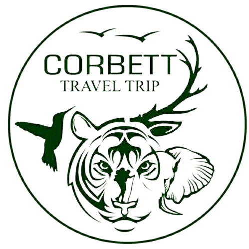
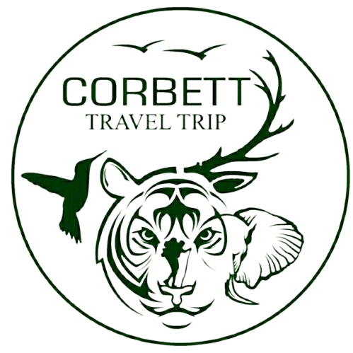

Monsoon
23° To 34° Jul, Aug, Sep
The rainy season is not the best time to go to Jim Corbett. The monsoon
season spans from June to September, and when it rains, it pours. The Jim Corbett park receives
torrential rainfall and sweeps away the safari tracks, making many zones inaccessible. Hence,
the national park is shut during the rainy season.

Winter
10° To 28° Nov, Dec, Jan, Feb
This is the best time to go to Jim Corbett. The forest is a vivid shade of
green, the birds are chirping, and the animals are basking in a pleasant atmosphere. The gates
are ready to open for enthusiastic visitors and the staff is pumped to usher you around the
beautiful park in the cool weather.

Summer
28° To 45° Mar, Apr, May Jun
Summer at the park ranges from April to early June and the temperatures
climbs up to 40 °C. It is hot, but for most Indians this is the best time to visit.
These are the months when schools are shut and summer holidays are on. The best way
to educate the future generation is to offer a first-hand experience of animals and birds in
their natural surroundings.